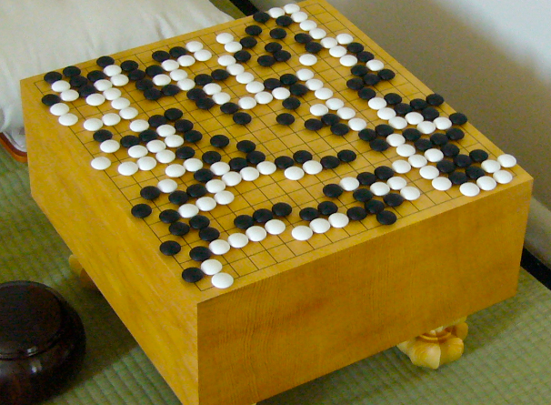

CURIOZITATI
1. Cercetătorii în domeniul inteligenței artificiale au dezvoltat un joc numit Go,
care este considerat a fi mai complex decât șahul. În 2016, un program de inteligență
artificială numit AlphaGo a învins unul dintre cei mai buni jucători de Go din lume,
ceea ce a fost considerat un moment important în dezvoltarea inteligenței artificiale.
2. În medicină, inteligența artificială poate fi folosită pentru a
ajuta la diagnosticarea și tratamentul bolilor. De exemplu, un program de inteligență artificială dezvoltat
de cercetătorii de la Google a fost capabil să detecteze cancerul de piele cu o precizie similară cu a unui
dermatolog experimentat.

CURIOZITATI
3. În 2018, cercetătorii de la OpenAI, au dezvoltat un
program de inteligență artificială numit GPT-2, care poate genera texte coerente
și plauzibile. Programul a fost considerat atât de avansat încât compania a decis
să nu facă public codul sursă pentru a evita utilizarea sa în moduri negative, cum
ar fi crearea de știri false sau alte forme de dezinformare.
4. În 2017, un robot numit Sophia, dezvoltat
de Hanson Robotics, a primit cetățenia saudită, devenind primul robot din lume care
a primit cetățenie oficială. Sophia a fost programată să răspundă la întrebări și să
interacționeze cu oamenii într-un mod cât mai natural posibil.
5. În 2019, cercetătorii de la Google au dezvoltat
un program de inteligență artificială numit BERT, care poate înțelege sensul cuvintelor și
al propozițiilor în context. Acest program a fost folosit într-un motor de căutare îmbunătățit,
ceea ce a permis utilizatorilor să găsească informații mai relevante și mai precise în căutările
lor online.
CURIOZITATI
6.
Deep Blue, computerul dezvoltat de IBM pentru a juca șah, a devenit cunoscut pentru
faptul că a reușit să învingă campionul mondial la șah, Garry Kasparov, într-un meci
de șase partide în 1997. Acesta a fost primul computer care a reușit să învingă un
campion mondial la șah într-un meci regulat. Meciul a fost considerat un moment important
în istoria inteligenței artificiale și a demonstrat că mașinile pot concura cu cei mai
buni jucători de șah din lume.
7.
Un alt domeniu în care inteligența artificială face progrese impresionante este
recunoașterea vocală. Într-un studiu din 2020, cercetătorii de la Microsoft și
Universitatea din Hong Kong au dezvoltat un model de inteligență artificială care poate
recunoaște vocea umană cu o acuratețe de peste 95%, chiar și într-un mediu zgomotos.
Această tehnologie poate fi folosită într-o varietate de aplicații, inclusiv în dispozitivele
de asistentă vocală și în aplicațiile de traducere vocală.